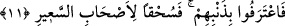

vermiş veya aklımızı kullanmış olsaydık şimdi şu alevli cehennemin mahkûmları
arasında olmazdık” derler.
et-Te’vilâtü’n-necmiyye’de bu âyet-i kerîme şöyle tefsir olunuyor: Şâyet biz kalp
kulaklarımızla dinlemiş; ya da ruhlarımızın akıllarını kullanarak akletmiş olsaydık şu
alevli cehennemin mahkûmları arasında olmazdık. Fakat bizler mühürlü kulaklarımızla
dinledik ve hasta, kilitli olan aklımızı kullandık derler.
11. Böylece günahlarını itirâf ederler. Artık (Allah’ın rahmetinden) uzak olsun, o
alevli cehennemin mahkûmları!
Kendilerine itirâfları fayda vermeyince zorunlu olarak: “Böylece günahlarını itirâf
ederler.” Bilindiği üzere itirâf, herhangi bir şeyi bilgiye dayalı olarak ikrar ve kabul
etmektir. Aynu’l-maânî’de “itirâf ederler” âyeti, “nefislerini mücrim bir nefis olarak
bilirler” şeklinde tefsir olunmuştur. Böylece onlar, bütün güçlerini kötü amele
yönelttiklerini ve onu tercih ettiklerini kabullenirler. Onların kötü amelleri; inkârları ve
Allah’ın âyetlerini ve peygamberlerini yalan saymalarıdır. Bâzı âlimlerin ifâdesine göre
âyette “zenb” yâni günah kelimesi tekil olarak getirilmiştir. Çünkü tekil çoğulun
sağladığı ifâdeyi sağlayabilir. Zira kelime aza ve çoğa şâmil olan ism-i cins olması
hasebiyle çoğul ifâde eder. Burada geçen “günah” kelimesiyle kasdedilen inkârdır. İnkâr
her ne kadar çeşit çeşit olsa da yine de cürmün sonu ve cehennemde ebedî kalmayı
gerektiren bir niteliği olması hasebiyle aynı durumda değerlendirilir.
“Artık (Allah’ın rahmetinden) uzak olsun o alevli cehennemin mahkûmları!”
Âyette yer alan “suhkan” kelimesi, masdar olup te’kid ifâde etmektedir. Bu kelime ya
zâid harfleri hazfedilen mezid ve müteaddî bir fiili te’kid etmektedir ki böylece takdir
“ezhakahumullahu” şeklinde olur. Mânâsı: “Allah onları işledikleri günahları sebebiyle
adamakıllı uzaklaştırsın” demek olur. Ya da bu te’kid, bu fiilin sonucu olan fiili te’kid
eder. Yâni “Allah onları uzaklaştırsın ve onlar da uzak olsunlar” demek olur. Bâzı
âlimlere göre bunlar gerçekten uzaklaştırılmışlardır. Bâzılarına göre de bu cümle
bedduâ cümlesidir. Bedduâ olması durumunda bu cümle Allah tarafından kullarına
onlara ne şekilde bedduâ edeceklerini öğretme amacıyla getirilmiştir. Nitekim tefsir
kitaplarında bu açıklamalara rastlıyoruz. Bâzı âlimlere göre ise bu cümle Allah Teâlâ
tarafından onlara yapılmış bir bedduâdır. Böylece Allah işâret ediyor ki, bedduâya
muhatap olanlar böylesi bir bedduâya lâyıktırlar ve kendilerine uzak olmaları ve helâk
olmaları şeklinde yapılan duâ mutlaka vaki olacaktır. Cehennem mahkûmlarından
maksad ise şeytanlarla cehenneme giren kâfirlerdir. Burada Allah’ın hicap ehlini kurb
cennetinden uzaklaştırıp ve bu’d cehennemine yaklaştıracağına işâret olunmaktadır.